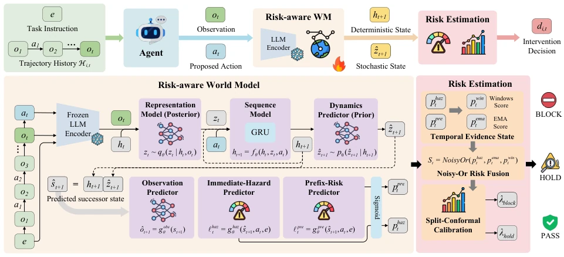
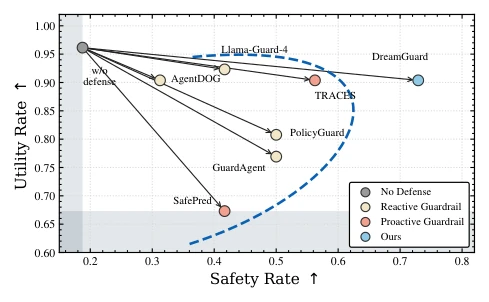

DreamGuard puts a "risk warning" tight spell on LLM Agents, attempting to solve the "boiling frog" problem of long-horizon risk accumulation using a lightweight world model. This design is quite clever, using GRU to replace large model reasoning, compressing latency to 25ms, indeed much faster than reactive guardrails that "think" for several seconds at will. But then again, it bets all risk prediction on the latent state; if the training data distribution shifts, will this "risk perception" turn into "risk hallucination"? After all, it only stops before actions, it won't actively help you correct actions like some "nanny" models; encountering complex scenarios might still rely on human fallback. However, being able to maintain high safety rate without sacrificing too much task utility, this balancing act is indeed worth a good review, at least stronger than those baselines that turn Agents into "mutes" for safety.
As LLM Agents frequently call external tools, runtime safety becomes a key pain point. Existing guardrails mostly belong to reactive types, only evaluating explicit risks of current actions, lacking modeling capability of risk evolution along trajectories. This "blind men touching an elephant" leads to long-horizon risks being ignored: single seemingly harmless actions (e.g., moving files, generating links) may trigger serious leaks after accumulation. For example, SafetyDrift (Dhodapkar and Pishori 2026) points out such cumulative risks are hard to detect locally. Although proactive methods like SafePred (Chen et al. 2026) introduce prediction, they rely on LLM for long-context reasoning, leading to high inference latency (often seconds), and prediction results often lack explicit risk evidence, hard to directly use for decision. Additionally, existing methods struggle to balance intervention thresholds of immediate hazard and long-horizon prefix risk, prone to false positives or false negatives. DreamGuard aims to solve these contradictions of efficiency and evidence lack.
DreamGuard core is a runtime guardrail based on a Risk-Aware World Model. Overall process divided into three steps: first, encode trajectory prefix and proposed action into recurrent latent state via Sequence Model; second, use Dynamics Predictor to predict successor latent state after action; finally, calculate immediate hazard and long-horizon prefix risk based on predicted state, output intervention decision after multi-time-scale fusion. Innovations lie in: 1. Architecture, adopt GRU to build Recurrent State Space Model (RSSM), replace expensive LLM reasoning, maintain fixed dimension latent state, ensure low latency. 2. Training strategy, split into two stages: first pretrain world model to learn environment dynamics, then risk-supervised fine-tuning, make latent state explicitly retain hazard transition evidence. 3. Risk estimation, introduce dual prediction heads outputting immediate hazard score and long-horizon prefix risk score respectively, and use Exponential Moving Average (EMA) and sliding window aggregate prefix risk, capture weak cumulative signals. 4. Decision mechanism, adopt calibrated Noisy-Or rule fuse multi-source risks, and through split-conformal calibration set BLOCK and HOLD thresholds, ensure false positive rate controllable on safe trajectories.

Figure 1: Overview of DreamGuard. (1) Risk-aware World Model: encodes the trajectory prefix and proposed action into a recurrent latent state, predicts the successor latent state, and produces immediate-hazard and prefix-risk scores. (2) Multi-horizon Risk Estimation: aggregates temporal risk evidence and applies a calibrated intervention rule to output a runtime decision before action execution.
Evaluated on four benchmarks: SafetyDrift, AgentDojo, ASB, and ASSE-Security. Compared to baselines like Llama-Guard-4-12B, PolicyGuard, GuardAgent, and SafePred, DreamGuard performs best in F1 and Safety Rate, and lowest latency (avg 25ms). On SafetyDrift, its PHIR reaches 96.3%, far exceeding other methods, proving effective at intercepting long-horizon risks. Online evaluation shows, its safety rate 72.92% and utility maintained 90.38%, better than all baselines. Ablation studies show, removing recurrent world model leads to F1 significant drop and FP surge, removing risk-supervised training leads to intervention too conservative. This confirms risk-aware latent state and multi-time-scale fusion crucial for balancing detection quality and false positive rate.

Figure 2: Defense performance comparison in the online guardrail setting. The blue dashed line represents the safety– utility frontier across all baselines.